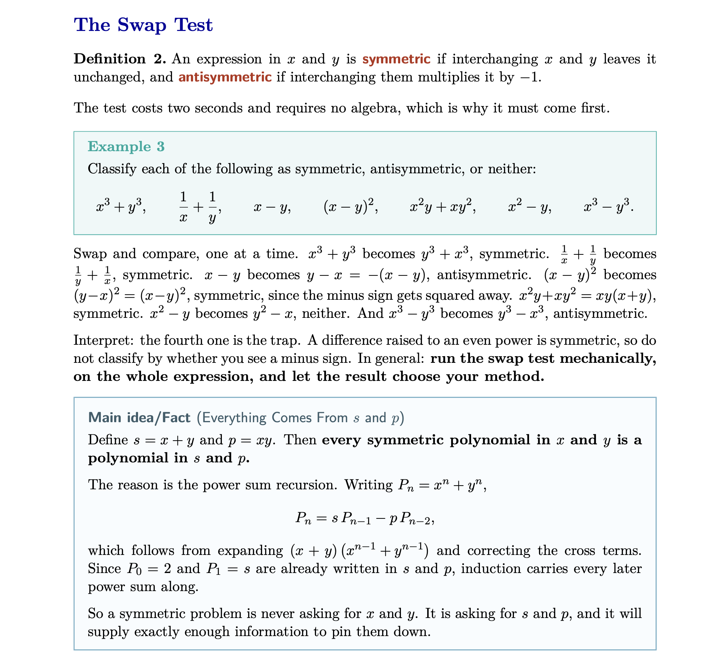
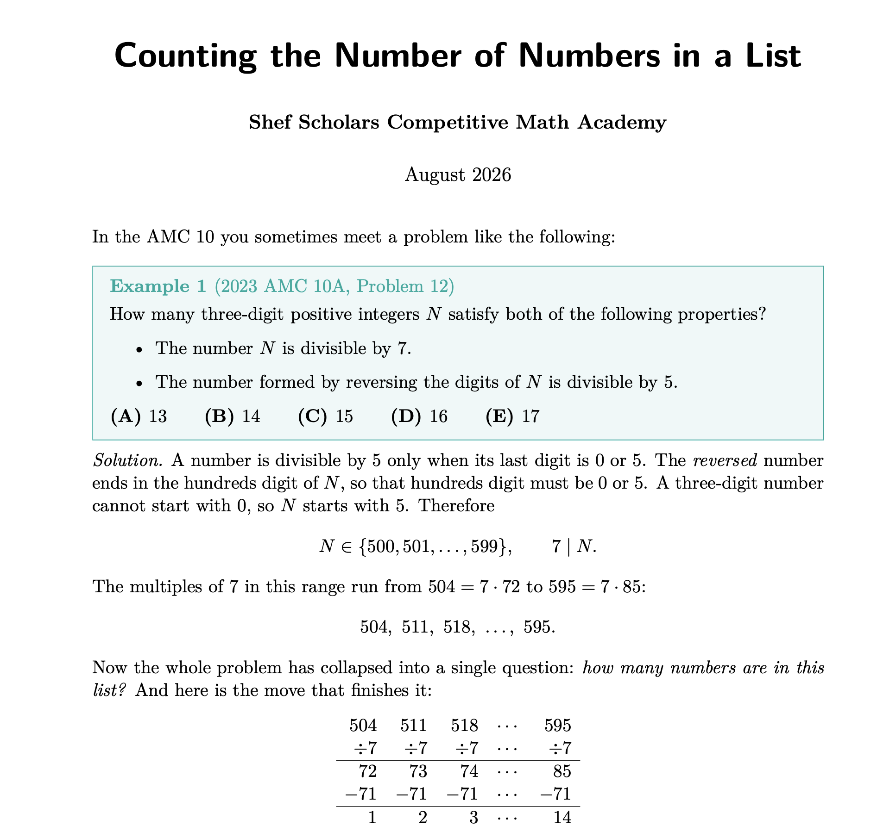

Live online · Sep 9 to Nov 1, 2026 · 30 students · Ends 4 days before AMC 10 A
The AMC 10 is out of 150.
This program is built around one number: 100.
That is seventeen questions out of twenty-five. Not all of them. Seventeen, plus knowing which of the rest to leave alone. Eight weeks, four tracks, one target.
$180 camp · $630 with mentorship
Start here
One hundred is seventeen questions. Not twenty-five.
The AMC 10 gives 6 points for a correct answer, 1.5 points for a question left blank, and nothing for a wrong one. Sixteen right with three left blank clears 100. So does seventeen right. Either way, eight questions on that paper are not your problem.
Most students sitting in the 60s and 70s are not missing theory. They are spending eleven minutes on question 22 and never reaching question 14. This program works on both halves: the theory that earns the seventeen, and the judgment about where the other fifty-eight minutes go.

Before you pay
Who this is for, and who it isn't.
I would rather you read this and close the tab than enroll into the wrong room. If you are between the two columns, book a call and I will tell you honestly.
This is built for your child if
- They have scored roughly 40 to 90 on a recent AMC 10, real or practice.
- Or they have never sat the AMC 10, but are comfortable with Algebra 1 and basic geometry.
- They finished our summer Basics camp and want the rest of the paper, not just problems 1 to 8.
- They are in grade 10 or below and under 17.5 years old on competition day, which is what the MAA requires to sit the AMC 10.
- They can commit to about five hours of live class a week for eight weeks.
This is the wrong room if
- They are already scoring above 110. You would be paying me to move too slowly. Email me and I will point you somewhere better.
- They have not finished pre-algebra. Week 0 assumes fractions, negatives, and basic exponents already work.
- You want a guaranteed number. Nobody can sell you that, and I say so plainly further down this page.
- Weekends are already full. The lectures are Saturday and Sunday mornings, and recordings are a backup, not a plan.
- Camera-on is not something you are comfortable with. This is taught as a live conversation, not a broadcast, and every session is recorded and shared with the other enrolled families.
The structure
Four tracks, running in parallel.
Every AMC 10 is built from the same four areas. So is this program. Your child works all four every single week, instead of finishing one in September and having forgotten it by November.
Algebra
Factoring and symmetric expressions. Telescoping, systems, exponents. Inequalities and AM-GM. Sequences. Polynomials and Vieta. Mean, median and data.
The biggest single block on the paper, and the one where speed compounds fastest.
Geometry
Angle chasing in circles. Similarity and congruency. Coordinate geometry. Area by decomposition, shoelace and ratios. Circle geometry. 3D solids.
Where students burn the most minutes per point, usually by not drawing the auxiliary line.
Combinatorics
Smart casework. Probability. Restrictions and complementary counting. Logic problems. Stars and bars, inclusion-exclusion, recursion.
The area where a wrong setup in the first thirty seconds costs you the whole problem.
Number Theory
Modular arithmetic. Factors and prime thinking. Divisibility. Digits and decimal representation. Diophantine equations and bounding. Divisors and factorials.
The smallest block, and the most learnable from scratch inside eight weeks.

Week 0 · sent from Aug 25 · due before Sep 12
Everyone starts level, wherever they're coming from.
Part of this cohort came through our Basics camp this summer. Part of it did not. Week 0 is four self-study foundation modules, one per track, covering the arithmetic, angle rules, counting fundamentals and divisibility tests that every later lecture quietly assumes. Nobody spends September catching up in public.
Modules go out from August 25, and within 48 hours of enrolling if you join after that. They are due before the first lecture on September 12. They are not graded and they are not busywork. They are the floor.
What you get
The complete program.
- 32Live topic lecturesSaturdays 11:00 and 12:30, Sundays 11:00 and 12:30, New York time. I teach at least 32 of the 40 sessions; up to 8 are led by guest olympiad competitors
- 8Wednesday sessions, 5:00 to 6:00 p.m. New York timeAlternating practice-test review and open problem-solving
- 4Full practice tests, each with its own review sessionThe first one is on September 9, before a single lecture, so we both know the starting number
- 4Week 0 foundation modulesOne per track, self-study, due before Sep 12
- ·A handout for every lectureTheory, worked examples, and an AMC problem set with full solutions
- ·Recordings of every sessionAvailable through December 31, so they are still there for both AMC dates
Your coach
I'm teaching this one myself.
I'm a three-time IMO Bronze Medalist, a Brown graduate, and a Schwarzman Scholar from Tsinghua. I've spent ten years competing in and teaching this material, and I run Shefs of Problem Solving, one of the biggest competitive math channels on YouTube.
Through Shef Scholars I've helped at least eight students reach the International Mathematical Olympiad. This program is not that. This is the eight weeks that take a student from the middle of the AMC 10 to past 100, and the reason I mention the eight is simply that I have watched a lot of students climb, and I know what the climb from 70 looks like from the inside.
I cap this cohort at 30 so I can actually interact with most of them during live sessions instead of talking at a screen. I teach at least 32 of the 40 sessions myself. For up to 8 of them I bring in a former olympiad competitor to work through problems from their own experience, because hearing a second person think out loud can bring forward a different perspective.
From our summer AMC 10 camp
What families said.
These are from the summer program, not from this one. This cohort is the first Get 100 group to run, which is part of why it is priced the way it is.
I liked the small group setting, which helps students to be able to participate and interact with the instructor throughout the class. This course will help your child build the theoretical foundations and strategies in solving math problems.
Parent of a summer 2026 studentI was not able to understand polynomials, and I learned cool techniques for solving and graphing them. I've been confused before on how to solve them, but now it's clear for me.
Ciana P., student, summer 2026Sep 9 to Nov 1, 2026 · all times New York
Six weeks of building. Two weeks of sharpening.
Weeks 1 through 6 add new theory in all four tracks at once. Week 7 pulls the whole thing back together in a cumulative review. Week 8 is nothing but problems, four bootcamps, no new material, five days before the exam. Pick a week for the full topic list.
Loading schedule...
One note on clocks
The United States moves off daylight time on Sunday, November 1, which is the morning of our final two sessions. Every session from September 9 through October 25 runs on New York daylight time. The last two, on November 1, run on New York standard time. I will email a reminder that week. If you are outside the US, check your own conversion for that weekend specifically.
Important, and easy to get wrong
Two exam dates. You register separately, and early.
This program is scheduled to finish right before the A date, with recordings and handouts still open through the B date.
Please do this in September, not October
Families cannot register for the AMC 10 directly with the MAA. Your child sits it through their school or through an authorized testing center, and registration at those sites typically closes two to three weeks before the competition. Popular centers fill earlier than that.
Enrolling here does not register your child for the exam. If your school does not host the AMC 10 and you are not sure where to look, book a call and I will help you find a site. This is the single most common way a well-prepared student ends up with nowhere to sit in November.
Enrollment
Two ways to join.
Thirty seats in the cohort. Six of them can add weekly one-on-one coaching.
The full program, paid once
Enroll · $1800 of 30 camp seats taken
- All 40 live sessions
- 4 practice tests with review sessions
- Week 0 foundation modules
- Handouts with full solutions for every lecture
- Recordings through December 31
Early bird pricing ends August 21, 2026. It goes to $240 after that.
Everything above, plus me one on one
Enroll · $6300 of 6 mentorship seats taken
- Everything in the camp
- A private 30-minute session with me every week
- A study plan built around that student's actual weak areas
- Their written work read and marked by me each week
- A mid-camp progress assessment
- A written evaluation of their progress and readiness at the end
Six spots, and the price goes to $720 on August 22. Whichever comes first.
Questions
When does it actually start?
How much work is it outside class?
What's the difference between this and the Basics camp?
My child didn't do the summer camp. Can they still join?
What if my child can't attend every session live?
My child already scores above 110. Should they join?
How do we actually register for the AMC 10?
Which sessions are recorded, and is my child on camera?
Who actually teaches the sessions?
What's the refund policy?
Is this affiliated with the MAA or the AMC?
Where do classes happen?
Do you guarantee a score of 100?
Thirty seats. Eight weeks. One number.
AMC 10 A is November 5. Our last session is November 1. Week 0 goes out from August 25.
Still have questions?
Grab 15 minutes on my calendar.
If you are not sure this is the right fit, or you want to talk through your child's current level before enrolling, book a short call. I would rather spend fifteen minutes telling you this is wrong for your child than take your money and prove it in October.